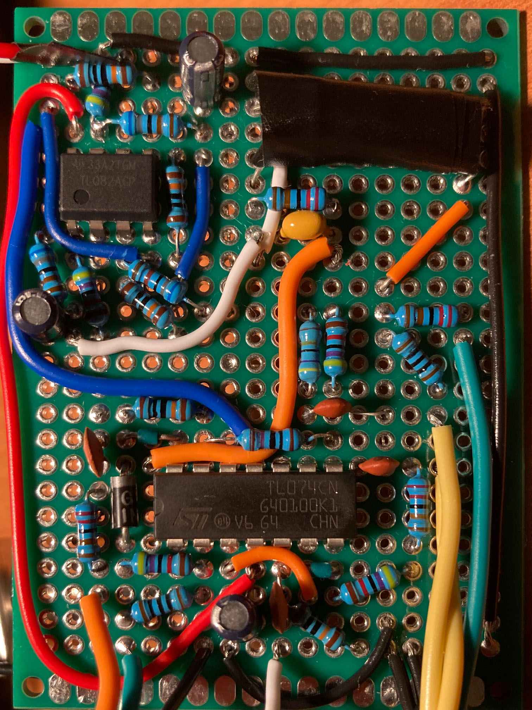
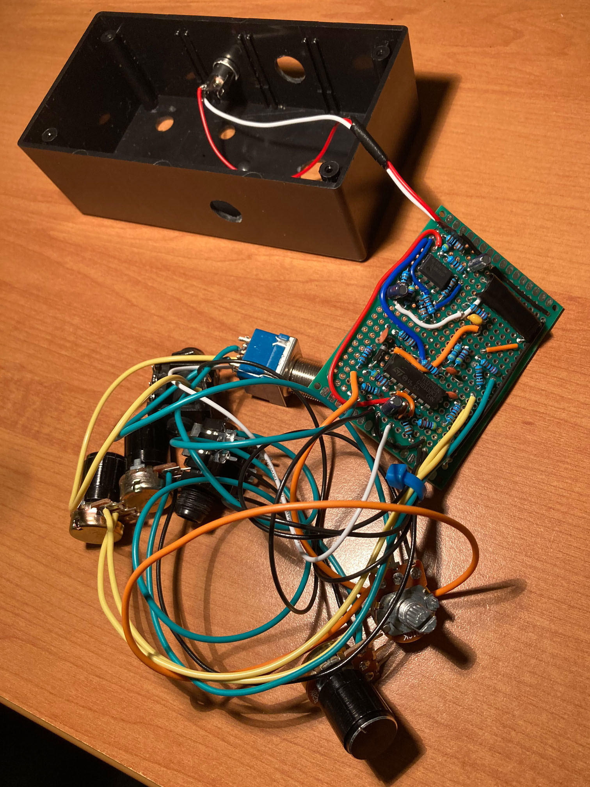
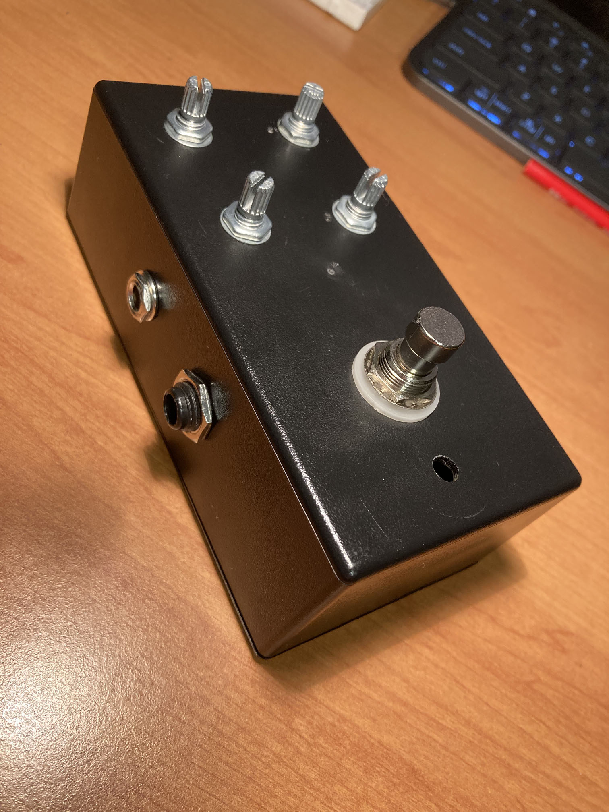

Custom Auto-Wah Guitar Pedal
What is an "auto-wah" pedal?
An auto-wah will adjust the frequency response of the sound based on the guitar input dynamics, in such a way that makes a "wah wah" sound. This was achieved using a band pass filter, whose center peak will be higher frequency for stronger signals. Knobs for volume, sensitivity, upper and lower bounds for the center peak were also added without having to adjust the base design very much.
Progress

Breadboarding

Prototyping circuit board

Connecting all components

All components mounted in chassis

Pedal powered up and plugged into amplifier
How does it sound?